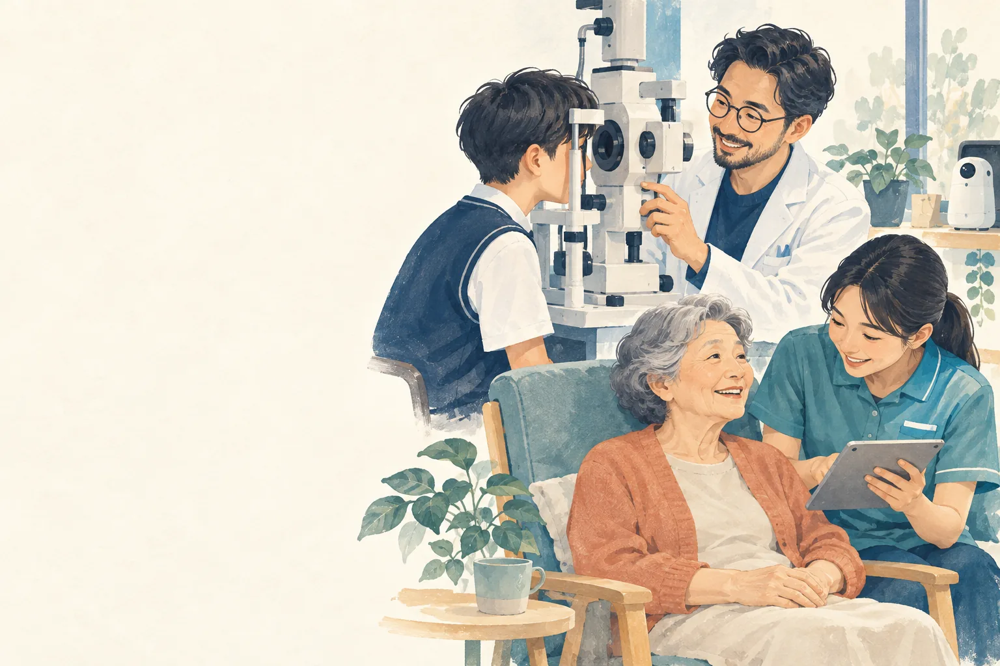
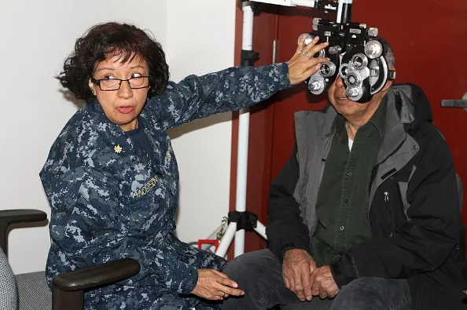

狹義的視光產業｜直接面對民眾
五專升學指南 · 給國中生、家長與輔導老師
看清楚
你的下一步
國中畢業可以讀高中、高職，也可以直接念五專。這裡把五專的入學管道、時程與比序重點一次整理好，也介紹一個很多人還不認識的醫事專業：讓人「看得見、看得清楚、看得舒服」的視光學科。

01 · 認識五專
五年一貫，國中畢業就開始學專業
五專是「五年制專科學校」。前段兼顧國英數等共同科目，同時就開始上專業課；馬偕視光的四年級整年在校外實習，五年級回校做專題與統整。畢業取得副學士學位，可以直接報考驗光師。
5 年國中畢業直升，中間不用再考一次大學入學
副學士畢業學位；可接著讀二技取得學士
1 整年實習四年級全年校外實習，提早進入職場
02 · 入學管道與時程
一年有好幾次機會，順序很重要
想讀五專，主要有三個免試管道，依時間先後是完全免試、優先免試、聯合免試。點選下面的管道，看它的重點、比序方式和日程；最後有一張比較表。
五專完全免試入學（單獨招生）不看會考
- 全國不分區，由各校辦理單獨招生。
- 完全不採計國中教育會考成績。
- 僅限國中應屆畢業生，由就讀國中統一集體報名。
- 每位學生只能選 1 個學校科組。
馬偕視光 115 學年度完全免試名額
比序會看哪些項目？（舉例）
- 多元學習表現：例如擔任班級幹部、小老師，或參加校內外服務學習。
- 均衡學習：例如健康與體育、藝術、綜合活動、科技等領域的學期成績。
- 自傳：例如家庭背景、求學過程、參加活動、對未來的期望。
不採計會考成績。各項目的計分方式與配分，以當學年度簡章公告為準。
重要日程（115 學年度）
- 4/27比序積分採計截止
- 4/28 – 5/4國中學校集體報名
- 5/14錄取公告
- 5/18 – 6/11各校辦理報到（依各校規定）
- 6/15 12:00報到後放棄錄取資格截止
五專優先免試入學馬偕視光不看會考
- 全國不分區招生，網路選填志願、統一分發，最多 30 個志願，不限地區、學校、科組。
- 應屆、非應屆畢業生及具同等學力者都可以報名：應屆生可國中集體報名或個別網路報名；非應屆或同等學力者採個別網路報名。
- 馬偕只有護理科採計會考；視光學科、幼兒保育科、餐飲管理科、化妝品應用與管理科、生命關懷事業科、人工智慧暨醫療應用科、智慧科技長期照顧科都不採計會考。
馬偕視光 115 學年度優先免試名額55 名
比序會看哪些項目？（舉例）
- 志願序：真心想讀的校科填在越前面越有利。
- 多元學習表現：例如競賽成績、擔任幹部、服務學習。
- 均衡學習、技藝優良、弱勢身分等項目。
以過去資料來看，馬偕僅護理科採計會考，視光學科不採計。各項目的計分方式、配分與是否採計會考，以當學年度簡章公告為準。
重要日程（115 學年度）
- 5/18 – 5/22國中集體報名（個別網路報名 5/19 起）
- 6/4 – 6/8網路選填志願（正式版）
- 6/11錄取公告
- 6/15 12:00報到及放棄錄取資格截止
重要提醒：高中職各就學區的優先免試和五專優先免試可以同時報名，但兩邊都錄取時只能擇一報到。五專優先免試錄取並報到後，若沒有在期限內放棄錄取資格，就不能再報名北、中、南區五專聯合免試及免試續招。
五專聯合免試入學採計會考
- 分北、中、南三區辦理，每一區限報名 1 所五專（一區一校）。
- 在優先免試之後辦理，優先免試沒錄取的同學還能再參加一次。
- 錄取方式都是現場登記分發報到，三區在同一天辦理。
- 聯合免試各科都採計會考成績。
馬偕視光 115 學年度聯合免試名額5 名｜學校代碼 602（北區）
比序會看哪些項目？（舉例）
- 國中教育會考：聯合免試採計會考成績。
- 多元學習表現：例如競賽、服務學習、日常生活表現、體適能。
- 適性輔導：參考《生涯發展規劃書》中家長、導師、輔導教師的意見。
- 其他：例如均衡學習、技藝優良、弱勢身分，以及各校自訂項目（過去馬偕採計英語能力檢定）。
各項目的計分方式、加權與同分比序，以當學年度簡章公告為準。
重要日程（115 學年度北區）
- 6/18 – 6/25國中集體通訊報名、個別網路與通訊報名
- 7/3各校寄發成績暨現場登記分發報到通知單
- 7/6 17:00 前確認是否收到通知單，沒收到請向招生學校查詢
- 7/8現場登記分發報到
- 7/13 12:00放棄錄取資格截止
重要提醒：高中職各就學區免試入學和各區五專聯合免試可以同時報名，但兩邊都錄取時只能擇一報到。也可以同時報名多區的五專聯合免試，但三區現場登記分發在同一天，而且要帶學歷（力）證件正本，所以同時被多區通知時，只能選一所學校參加現場登記分發。
聯合免試之後仍有名額的學校，可經教育部核准辦理免試續招（約 7–8 月，各校另行公告）。
報到前要想清楚：任一管道錄取並報到後，如果還想參加之後的高中職或五專招生，必須在期限內辦理「放棄錄取資格」，而且一經辦理不能撤回。
三種管道比一比
| 完全免試 | 優先免試 | 聯合免試 | |
|---|---|---|---|
| 辦理時間 | 會考前（4–5 月） | 會考後（5–6 月） | 優先免試後（6–7 月） |
| 招生範圍 | 全國不分區，各校單獨招生 | 全國不分區 | 分北、中、南三區 |
| 誰可以報名 | 國中應屆畢業生 | 應屆、非應屆及同等學力者 | 應屆、非應屆畢業生 |
| 可選幾個 | 1 個學校科組 | 最多 30 個志願 | 每區限報 1 所，可報多區，但分發同一天只能擇一 |
| 報名方式 | 國中集體報名 | 國中集體或個別網路報名 | 國中集體或個別報名 |
| 馬偕視光名額（115 學年度） | 40 名 | 55 名 | 5 名 |
| 錄取方式 | 各校依比序錄取 | 網路選填、統一分發 | 現場登記分發 |
| 會考成績（馬偕視光，過去資料） | 不採計 | 過去僅護理科採計 | 採計 |
| 比序項目（舉例） | 服務學習、均衡學習、自傳 | 志願序、多元學習表現、均衡學習 | 會考、多元學習表現、適性輔導 |
| 適合誰 | 已經確定想讀這一科、想早點定位 | 想多比較幾個校科，把真心想讀的填前面 | 前面管道沒錄取，或想再爭取一次 |
資料來源（第三方資料）：技專校院招生委員會聯合會 115 學年度五專完全免試、優先免試、北區聯合免試招生重要日程表；名額依「115 學年度技專校院五專入學招生名額分配核定表」；比序項目依過去學年度招生簡章及馬偕專校招生說明資料整理。歷史資料僅供參考，一切規則以當學年度免試入學招生委員會所公告為主。
30 秒找到你適合先準備的管道
1. 你對「讀五專視光」的確定程度？
2. 你希望什麼時候確定學校？
03 · 為什麼是視光
視光不是「賣眼鏡」，是有國家證照的醫事專業
2016 年《驗光人員法》公布後，替民眾驗光、配鏡與配隱形眼鏡都要由通過國家考試的驗光人員執行。視光學科學的是眼睛構造、光學、驗光技術、雙眼視覺與隱形眼鏡，以醫學為基礎，光學只是其中一部分。
驗光師專技高考
專科以上學校驗光或視光科系畢業、實習期滿成績及格即可報考。五專視光學科畢業就符合資格，不必先讀完大學。
驗光生專技普考
高級醫事職業以上學校相關科系畢業可報考，業務範圍較驗光師窄。考試辦理方式依考選部公告為準。
驗光所・眼鏡專業門市
驗光、配鏡、隱形眼鏡配戴與衛教
眼科診所・醫院
協助屈光檢查與視功能評估
鏡片・隱形眼鏡產業
產品研發、教育訓練、專業業務
近視防控・學童視力
學童近視管理與視力保健推廣
高齡與低視力服務
老花、低視力輔具的評估與教導使用
AI 與智慧視覺科技
眼動追蹤、智慧眼鏡、視覺檢測軟體
資料來源（第三方資料）：《驗光人員法》（中華民國 105 年 1 月 6 日公布）第 1、2、12 條。
04 · 國考與起薪
考得上，也找得到工作
家長最常問的兩件事：畢業後考不考得上證照、出社會薪水多少。薪資可以依證照與職場類型自己篩選比較。
本校五專畢業生 驗光人員考取率
本校五專全國平均
本校數據：馬偕專校視光學科統計。全國平均（第三方資料）：考選部專門職業及技術人員考試驗光人員及格率。橫軸為考試年度（民國年）。
05 · 課程地圖
五年怎麼學：認識 → 專業 → 實習 → 整合
每一年都搭配後期中等教育課程與博雅通識課程；上方為國考核心科目，虛線以下為其他專業課程。
資料來源：馬偕專校視光學科「五專課程地圖」。實際開課依學校公告為準。
06 · 未來發展
視光產業有多大？從一副眼鏡到整個體系
視光產業可以分成兩圈：狹義的視光產業直接面對民眾，廣義的視光產業則在背後支撐整個體系。讀視光，兩圈都走得進去。
廣義的視光產業｜支撐整個體系
不在第一線，一樣需要懂眼睛的人
點選上面任一個角色，看看實際工作的樣子。

配鏡師、驗光師、眼科醫師差在哪？
| 配鏡師 | 驗光師 | 眼科醫師 | |
|---|---|---|---|
| 主要工作 | 依處方配製眼鏡 | 檢查、判讀、開立處方 | 診斷、用藥、手術 |
| 能否驗光 | 否 | 是（受法規範圍限制） | 是 |
| 能否用藥 | 否 | 否 | 是 |
| 能否手術 | 否 | 否 | 是 |
| 取得資格 | 技術訓練與證照 | 專技高考驗光人員考試 | 醫師國考＋專科訓練 |
三者是同心圓，不是上下級：範圍不同、責任不同，缺一不可。驗光師發現超出自己範圍的狀況就轉介給眼科醫師，這是專業成熟的表現。
驗光師每天在做的四件事
- 評估「看」的過程光訊號由眼睛接收、經神經傳到大腦，再由視覺皮質整合，任何一段出問題都會影響視力。
- 從眼睛看全身健康青光眼、白內障、斜弱視、糖尿病視網膜病變、高血壓，眼睛是全身健康的窗口。
- 衛教與諮詢把眼睛與視覺狀況說清楚，往往比檢查本身花更多時間。
- 訂定改善計畫把數據變成建議，再把建議變成對方做得到的事：配鏡矯正、生活習慣調整、定期追蹤。
畢業後可以去哪裡？
眼鏡通路驗光所眼科診所隱形眼鏡與鏡片製造商研發與品保學術與教學公會與公共衛生
升學這條路，也可以一直往上接
畢業後可以先就業、先考照，也可以繼續升學；兩條路不衝突，很多人邊工作邊進修。
15 歲
五專視光
五年完成專業養成與實習
20 歲
驗光師國考・就業
畢業即可報考，取得執業資格
+2 年
二技視光系
取得學士，可日間或在職就讀
+2 年起
碩士・博士
視覺科學、醫學工程、AI 應用；或出國進修
捷徑
拿到驗光師證書，就能直接報考碩士班
驗光師屬於專門職業及技術人員高等考試。取得高考及格證書者，可以「同等學力」報考大學碩士班，不必先讀完二技或大學。
五專視光驗光師高考及格碩士班
另一條路：五年制專科畢業、離校滿三年以上，也可以同等學力報考碩士班。各校系可能另訂工作年資或加修學分規定，報考前請查該校簡章。
資料來源（第三方資料）：教育部《入學大學同等學力認定標準》第五條第五款（專門職業及技術人員高等考試及格）、第四款（專科學校畢業離校年數）。
資料來源：馬偕專校視光學科「視光概論」課程講義（W01 課程導論：視光學與視光產業）；從業人員分工依《驗光人員法》與醫師法相關規定整理（第三方資料）。
07 · 常見問題
依你的身分，先看最常被問的問題
我數理不太好，可以讀視光嗎？
可以。一年級有「視光應用數學」與「幾何光學」從基礎教起，老師也會用實物、模擬器和實驗帶你理解。比起很會算，更重要的是細心、願意動手練習，以及喜歡跟人說話。
我自己有戴眼鏡，會影響嗎？
不會。很多驗光師自己就有戴眼鏡，戴著眼鏡或隱形眼鏡操作儀器都沒問題，而且你會更懂病人的感受。
上課都在做什麼？
二、三年級是專業課的主體：視光學、配鏡學、隱形眼鏡學都有對應的實驗課，你會親手操作驗光儀器、幫人挑選與調整眼鏡。四年級整年到校外實習，五年級回校做專題與統整。
完全免試只能選一個，要怎麼決定？
如果你已經很確定想讀視光，完全免試可以讓你在會考前就定位。如果還在比較，可以先留意學校公開的校園參訪日或體驗日，再搭配會考後的優先免試，最多能填 30 個志願。
視光和護理差在哪裡？
兩個都是醫事人員。護理師照顧病人整體的健康，多在醫院輪班；驗光師專注在眼睛與視覺，做視力檢查、配眼鏡與隱形眼鏡，工作場所以驗光所、眼鏡門市和眼科診所為主。
前三年還要讀國英數嗎？
要。五專每一年都有後期中等教育課程與博雅通識，同時也從一年級就開始上解剖生理學、視光常用術語與概論等專業課，兩邊一起並進。
四年級的校外實習在做什麼？
四年級整年到校外實習單位，在職場實際操作驗光、配鏡與服務顧客，把前三年學的東西用在真實的人身上。實習單位依學校安排。
我的會考成績普通，還有機會嗎？
有。完全免試入學完全不看會考成績；以過去資料來看，馬偕視光學科在優先免試也不採計會考（以當年度簡章為準），看的是志願序、多元學習表現、均衡學習等。把服務學習、均衡學習等紀錄顧好，對每個管道都有幫助。
我對 AI、科技比較有興趣，跟視光有關嗎？
很有關。智慧眼鏡、眼動追蹤、視覺檢測軟體都需要懂眼睛與視覺的人；學校也會把 AI 與數位工具帶進課堂。喜歡科技的你，在視光可以找到發揮的地方。
想先多了解一點，可以怎麼做？
可以追蹤我們的 Instagram「睛來馬偕｜視光情報所」，並留意學校公開的校園參訪日期或體驗日。到馬偕專校首頁點「想唸馬偕來問我」加入 LINE 大群，在大群的記事本裡找到視光學科專群加入，活動消息都會在那裡公告。
家長最關心三件事：讀完能不能繼續升學、找不找得到工作、十年後還有沒有前景。
升學
五專不是終點，往上接得很順
- 畢業取得副學士，可接二技（約 2 年取得學士），或插班大學。
- 考取驗光師後，可依《入學大學同等學力認定標準》以同等學力直接報考碩士班，不必先讀完大學。
- 五專畢業、離校滿三年，也可以同等學力報考碩士班。
就業
有國家證照，工作有保障
- 驗光師是第 15 類醫事人員，依法執行驗光業務須具驗光人員證照。
- 本校五專畢業生歷年驗光師考取率都高於全國平均。
- 職場包括驗光所與眼鏡門市、眼科診所與醫院、鏡片與隱形眼鏡公司、儀器公司。
- 依 1111 職缺刊登，同一職場中有證照的起薪明顯高於無證照。
未來發展
需求跟著社會一起成長
- 高齡化帶來老花、低視力等視覺照護需求；學童近視防控也需要專業人員。
- AI、智慧眼鏡、眼動追蹤等新科技，都需要真正懂眼睛與視覺的人才。
- 累積年資後，可往門市主管、驗光所負責人、產業研發、教學與研究發展。
讀視光是不是以後就在眼鏡行賣眼鏡？
驗光師是依《驗光人員法》管理的醫事人員，工作核心是專業的視力檢查與矯正。除了專業門市與驗光所，也能到眼科診所、鏡片與隱形眼鏡公司、研發單位，或繼續升學走研究與教學。
會不會被 AI 取代？
儀器與 AI 能幫忙量測，但判斷檢查結果、配合生活需求調整處方、跟病人溝通與衛教，仍需要專業人員。學校也把 AI 與數位工具帶進課堂，讓學生學會用 AI 把工作做得更好。
學費多少？有補助嗎？
五專前三年的學費依教育部規定有補助，比照公立學校，可以大幅減輕家長負擔。以下是視光學科每學期學雜費（新臺幣）：
| 一、二、三年級 | 四年級 | 五年級 | |
|---|---|---|---|
| 學費 | 21,945 | 29,000 | 29,000 |
| 雜費 | 9,695 | 8,400 | 10,500 |
| 小計 | 31,640 | 37,400 | 39,500 |
上表為收費標準，前三年的學費補助另依教育部規定辦理。最新收費可到馬偕專校校務資訊公開網頁查詢，實際金額以學校公告為準。
讀五專好，還是讀高中再考大學好？
各有適合的孩子。五專提早進入專業，畢業時約 20 歲就能報考驗光師證照；高中則保留比較多選擇的時間。如果孩子已經對醫療或視光有興趣，五專能讓他早一步定位，之後仍能接二技、插大或以證照報考碩士。
孩子還不確定自己的興趣，適合讀嗎？
建議留意學校公開的校園參訪日期或體驗日，帶孩子實際看看、問問學長姐，再決定。活動消息可以從馬偕專校首頁的「想唸馬偕來問我」LINE 大群，找到視光學科專群取得。完全免試只能選一個校科，還在比較的話，可以考慮會考後的優先免試，最多能填 30 個志願。
驗光師和驗光生有什麼不同？
兩者都是依《驗光人員法》管理的驗光人員。驗光師屬專技高考，報考資格為專科以上視光相關科系畢業，業務範圍較廣；驗光生屬專技普考，業務範圍較窄。五專視光畢業即可報考驗光師。
如果畢業時沒考上證照怎麼辦？
可以繼續準備、再次報考。期間也能先以視光科系畢業的身分就業，不過依 1111 職缺刊登，無證照的起薪明顯低於有證照者，所以我們的課程以國考科目為核心，協助學生在畢業時就考取。
工作時間大概是怎樣？
依職場而不同。眼鏡門市與驗光所多為排班制，依 1111 職缺刊登，常見月休約 9–10 天；眼科診所則依門診時段，可能有早、午、晚診的班別。
什麼樣的孩子適合讀視光？
細心、願意反覆練習操作，喜歡跟人說話、願意為人服務的孩子都很適合。對光學、科技或醫療有好奇心，會是加分。戴眼鏡完全不影響。
以後可以自己開業嗎？
可以。驗光人員可以依法開設驗光所，但要怎麼準備，會依開業的方向與規模而不同。歡迎直接用頁面下方的聯絡方式與我們聯繫，我們可以依孩子的規劃一起討論。
資料來源：馬偕專校招生簡章「學校及各招生科簡介」；《入學大學同等學力認定標準》第五條（第三方資料）；起薪依 1111 人力銀行職缺刊登（第三方資料）。
學生說想走醫療，第一個想到的常常是護理。其實醫事人員不只護理師一種，在馬偕，還有兩條不同性格的學生也適合的醫療相關路線。
護理科
護理師
醫事人員，馬偕的招牌科系。適合想在醫院、臨床第一線照顧病人的學生。
視光學科
驗光師
第 15 類醫事人員。五專畢業、實習及格即可報考驗光師高考，取得後還能以同等學力報考碩士班。
適合：細心、喜歡動手操作儀器、喜歡跟人說話，對光學或科技有好奇心的學生。
智慧科技長期照顧科
智慧照顧・泛醫事方向
把物聯網、遠距照護與科技輔具帶進長期照顧，實習場域包括科技公司與長照機構。畢業後可往泛醫事人員（Allied Health）方向發展，也能升讀二技或插班大學。
適合：有耐心、喜歡照顧人，也對科技應用有興趣的學生。
輔導建議：學生對「醫療」有興趣但不一定適合護理的工作型態時，可以一起討論視光或智慧長照，學校會公開校園參訪日期與體驗日，可以提醒學生透過馬偕專校首頁的「想唸馬偕來問我」LINE 大群取得消息。
完全免試的報名流程要注意什麼？
限國中應屆畢業生，由國中統一辦理集體報名，每位學生只能報 1 個校科組。115 學年度比序積分採計截止為 4/27，集體報名為 4/28–5/4，請提早協助學生確認服務學習、均衡學習等紀錄。
學生已經錄取並報到，還想參加後面的管道怎麼辦？
必須在簡章規定期限前完成「放棄錄取資格」聲明（115 學年度完全免試與優先免試皆為 6/15 中午 12:00），辦理後不得撤回。建議放榜前就先跟學生與家長確認意向。
可以安排視光體驗課或入班宣導嗎？
可以。我們有國中技藝教育與生涯發展教育的合作經驗，能帶視力表、透鏡與光學教具到校，讓學生實際體驗立體視覺、色覺與透鏡成像。歡迎用下方聯絡方式洽詢。
官方資料要去哪裡查？
招生日程與簡章請以各招生委員會及各校招生專區公告為準；馬偕各科資訊請見學校網站。
會考成績中等、但對視光有興趣的學生，建議走哪個管道？
如果學生已經很確定，完全免試入學不採計會考成績，可以提早定位；若還想比較，優先免試最多能填 30 個校科志願，把視光填在前面即可；以過去資料來看，馬偕視光學科在優先免試不採計會考成績（以當年度簡章為準），對會考成績中等的學生特別友善。上方「30 秒找到你適合先準備的管道」可以直接帶學生做。
驗光師和眼科醫師、眼鏡行人員有什麼不同？
眼科醫師負責眼疾的診斷、治療與手術；驗光師是依《驗光人員法》管理的醫事人員，執行非侵入性的屈光檢查、驗光與配鏡，看到可能的眼疾會轉介給眼科醫師。依法執行驗光業務須具驗光人員證照，這也是視光科系存在的原因。
智慧科技長期照顧科和護理科差在哪？
護理科以培育護理師、走臨床照護為主；智慧科技長期照顧科聚焦長期照顧，並把物聯網、遠距照護與科技輔具帶進照顧現場，實習場域包括科技公司與長照機構，畢業後往泛醫事（Allied Health）方向發展。
學生擔心數理不好，該怎麼回應？
視光會用到光學與計算，但一年級就有視光應用數學與幾何光學，從基礎開始教。比起數理成績，細心、願意動手練習和溝通能力更重要。
視光學生畢業後的升學管道有哪些？
可升讀二技或插班大學；考取驗光師後，可依《入學大學同等學力認定標準》第五條第五款以同等學力報考碩士班；五專畢業離校滿三年也可依同條第四款報考。
家長對五專有疑慮時，可以怎麼說明？
可以請家長看「家長」分頁，我們把升學、就業、未來發展整理成三張卡片，並附上考取率與起薪的資料來源；也可以請家長加入馬偕專校首頁的「想唸馬偕來問我」LINE 大群，在記事本找到視光學科專群，留意公開的校園參訪日與體驗日。
資料來源：馬偕專校招生簡章「學校及各招生科簡介」；《驗光人員法》（第三方資料）。